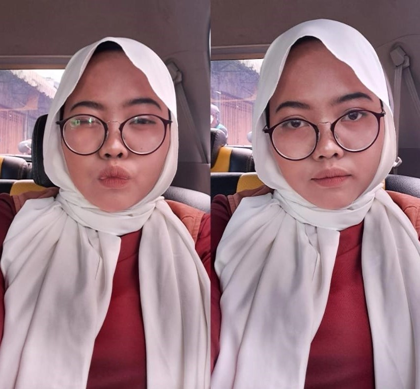
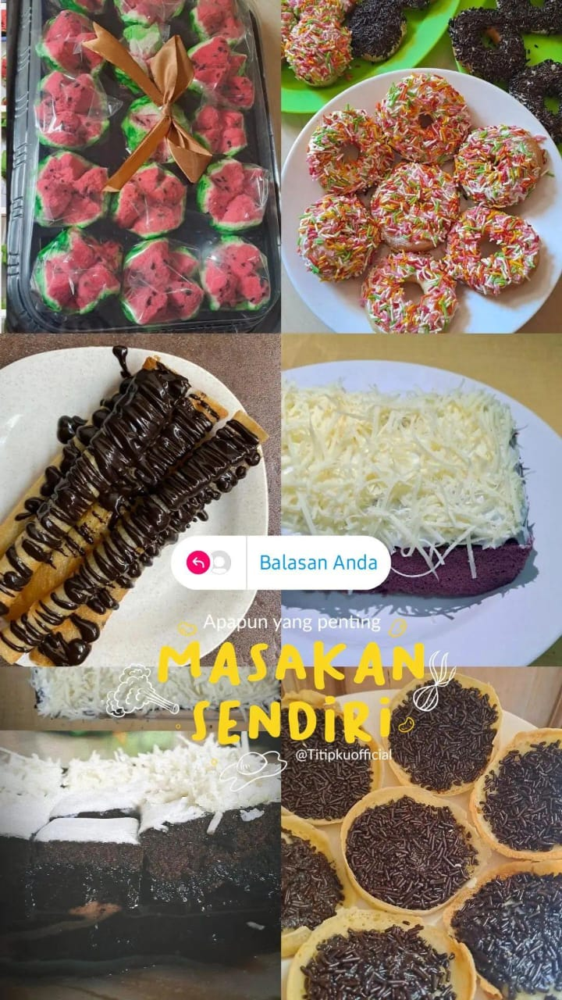
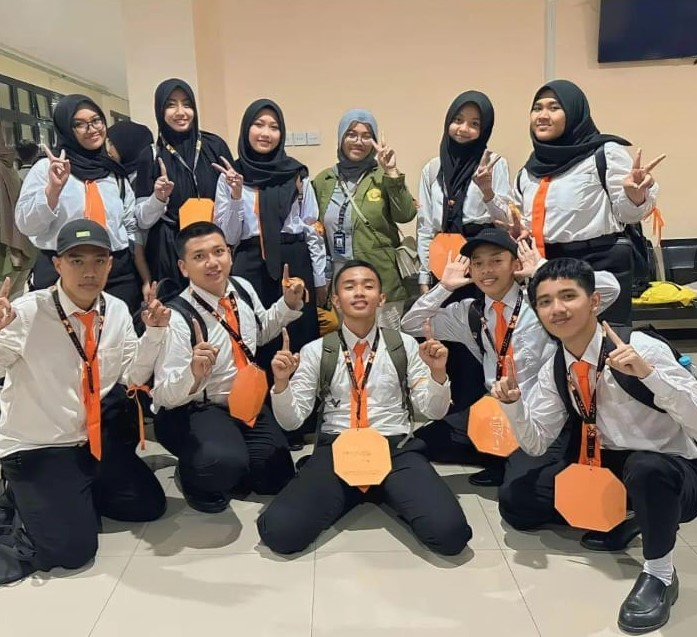
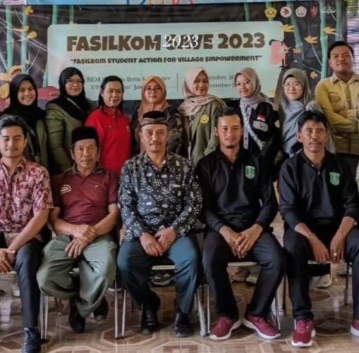
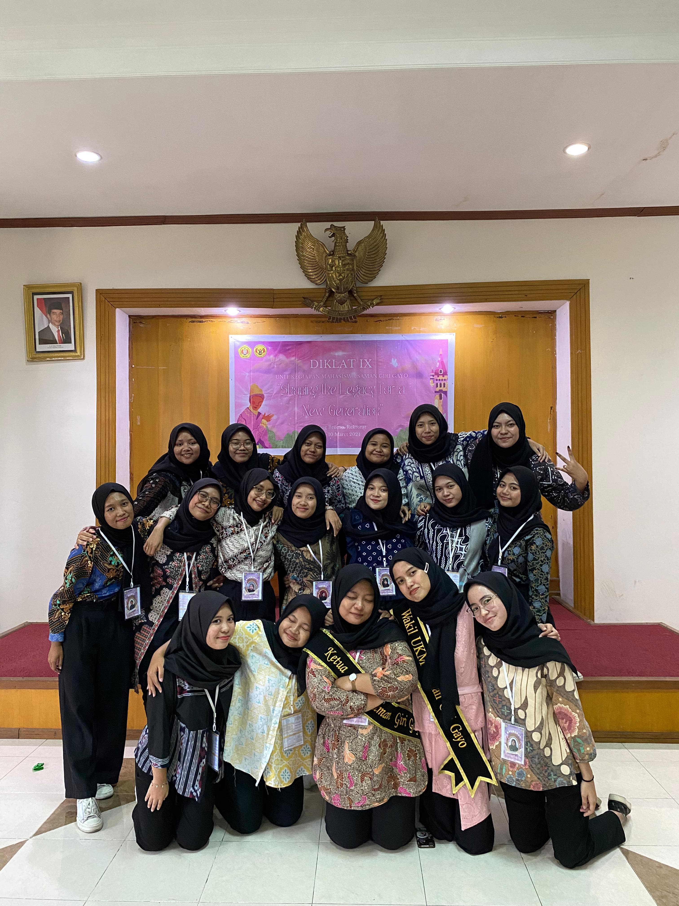
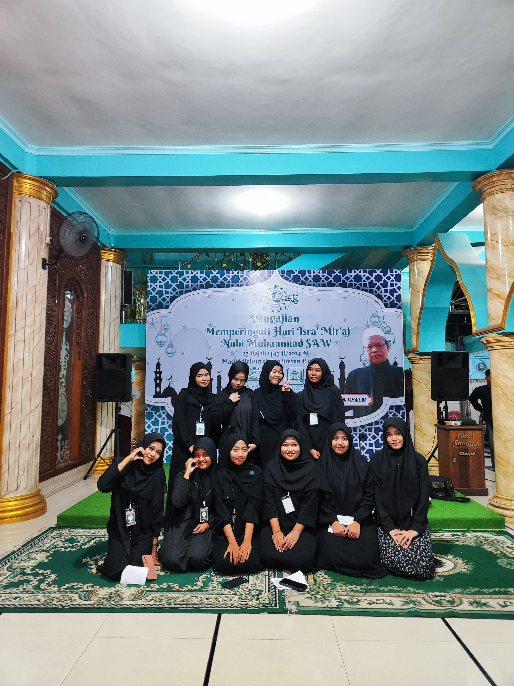

Mahasiswa semester 4 program studi sistem informasi fakultas ilmu komputer Universitas Pembangunan Nasional "Veteran" Jawa Timur. Lahir di Madiun dan tinggal di Sidoarjo. Pernah menempuh pendidikan di SMPN 1 Sedati dan SMAN 1 Waru. Dulu pernah memiliki cita-cia sebagai seorang dokter, tetapi pupus karena tidak lolos tes. Sekarang cita-cita saya sebagai System analyst dan Data Engineer.

Saya memiliki hobi memasak. saya suka sekali membuat kue. jika memiliki waktu senggang saya akan mencoba resep baru.




Dikampus saya mengikuti berbagai kegiatan kepanitiaan dan organisasi. Untuk organisasi, saya tergabung dalam Tari Saman dan Karawitan. Untuk kepanitiaan saya berpartisipasi pada MOSAIK 2023, FASILKOM SAVE 2023, dan Diklat Saman Giri Gayo 2024. Selain organisasi di dalam kampus, saya juga aktif dalam berorganisasi di lingkungan tempat tinggal saya. Saya aktif dalam kegiatan Remaja Masjid.